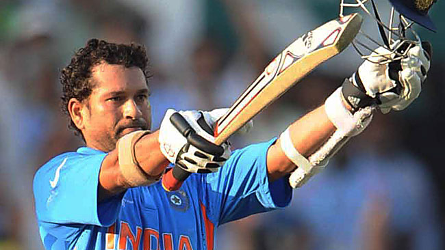

The 2011 ICC Cricket World Cup was the tenth Cricket World Cup. It was played in India, Sri Lanka, and (for the first time) Bangladesh. India won the tournament, defeating Sri Lanka by 6 wickets in the final in Mumbai. Thus becoming the first country to win the Cricket World Cup final on home soil.